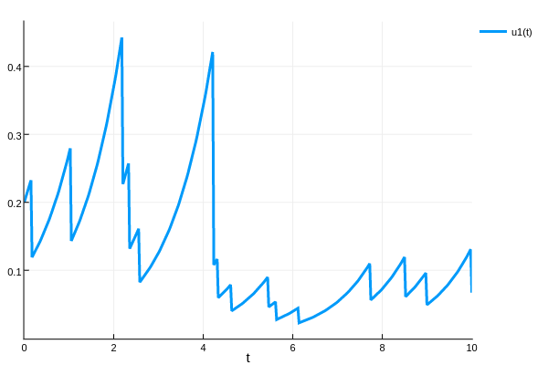
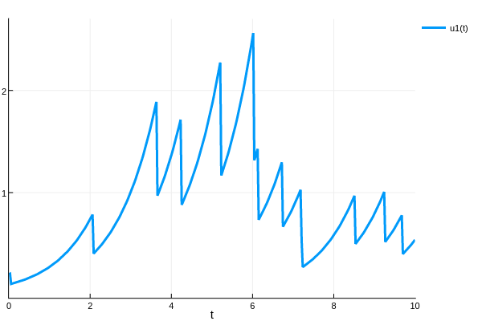

Jump Diffusion Equations
This tutorial assumes you have read the Ordinary Differential Equations tutorial.
Jump Diffusion equations are stochastic diffeential equations with discontinuous jumps. These can be written as:
\[\frac{du}{dt} = f(u,p,t) + Σgᵢ(u,t)dWⁱ + Σ h_i(u,p,t)N_i(t)\]
where $N_i$ is a Poisson-counter which denotes jumps of size $h_i$. In this tutorial we will show how to solve problems with even more general jumps.
Defining a ConstantRateJump Problem
To start, let's solve an ODE with constant rate jumps. A jump is defined as being "constant rate" if the rate is only dependent on values from other constant rate jumps, meaning that its rate must not be coupled with time or the solution to the differential equation. However, these types of jumps are cheaper to compute.
(Note: if your rate is only "slightly" dependent on the solution of the differential equation, then it may be okay to use a ConstantRateJump. Accuracy loss will be related to the percentage that the rate changes over the jump intervals.)
Let's solve the following problem. We will have a linear ODE with a Poisson counter of rate 2 (which is the mean and variance), where at each jump the current solution will be halved. To solve this problem, we first define the ODEProblem:
function f(du,u,p,t)
du[1] = u[1]
end
prob = ODEProblem(f,[0.2],(0.0,10.0))Notice that, even though our equation is on 1 number, we define it using the in-place array form. Variable rate jump equations will require this form. Note that for this tutorial we solve a one-dimensional problem, but the same syntax applies for solving a system of differential equations with multiple jumps.
Now we define our rate equation for our jump. Since it's just the constant value 2, we do:
rate(u,p,t) = 2Now we define the affect! of the jump. This is the same as an affect! from a DiscreteCallback, and thus acts directly on the integrator. Therefore, to make it halve the current value of u, we do:
affect!(integrator) = (integrator.u[1] = integrator.u[1]/2)Then we build our jump:
jump = ConstantRateJump(rate,affect!)Next, we extend our ODEProblem to a JumpProblem by attaching the jump:
jump_prob = JumpProblem(prob,Direct(),jump)We can now solve this extended problem using any ODE solver:
sol = solve(jump_prob,Tsit5())
plot(sol)
Variable Rate Jumps
Now let's define a jump which is coupled to the differential equation. Let's let the rate be the current value of the solution, that is:
rate(u,p,t) = u[1]Using the same affect!
affect!(integrator) = (integrator.u[1] = integrator.u[1]/2)we build a VariableRateJump:
jump = VariableRateJump(rate,affect!)To make things interesting, let's copy this jump:
jump2 = deepcopy(jump)so that way we have two independent jump processes. We now couple these jumps to the ODEProblem:
jump_prob = JumpProblem(prob,Direct(),jump,jump2)which we once again solve using an ODE solver:
sol = solve(jump_prob,Tsit5())
plot(sol)
Jump Diffusion
Now we will finally solve the jump diffusion problem. The steps are the same as before, except we now start with a SDEProblem instead of an ODEProblem. Using the same drift function f as before, we add multiplicative noise via:
function g(du,u,p,t)
du[1] = u[1]
end
prob = SDEProblem(f,g,[0.2],(0.0,10.0))and couple it to the jumps:
jump_prob = JumpProblem(prob,Direct(),jump,jump2)We then solve it using an SDE algorithm:
sol = solve(jump_prob,SRIW1())
plot(sol)
Coupling Jump Problems
In many applications one is interested in coupling two stochastic processes. This has applications in Monte Carlo simulations and sensitivity analysis, for example. Currently, the coupling that is implemented for jump processes is known as the split coupling. The split coupling couples two jump processes by coupling the underlying Poisson processes driving the jump components.
Suppose prob and prob_control are two problems we wish to couple. Then the coupled problem is obtained by
prob_coupled = SplitCoupledJumpProblem(jump_prob,jump_prob_control,Direct(),coupling_map)Here, coupling_map specifies which jumps to couple. If (j,i) is in coupling_map, then the ith jump in prob will be coupled to the jth jump in prob_control. Note that currently SplitCoupledJumpProblem is only implemented for constant rate jump problems.
As an example, consider a doubly stochastic Poisson process, that is, a Poisson process whose rate is itself a stochastic process. In particular, we will take the rate to randomly switch between zero and 10 at unit rates:
rate(u,p,t) = u[2]*10
affect!(integrator) = integrator.u[1] += 1.
jump1 = ConstantRateJump(rate,affect!)
rate(u,p,t) = u[2]
affect!(integrator) = (integrator.u[2] -= 1.;integrator.u[3] += 1.)
jump2 = ConstantRateJump(rate,affect!)
rate(u,p,t) = u[3]
affect!(integrator) = (integrator.u[2] += 1.;integrator.u[3] -= 1.)
jump3 = ConstantRateJump(rate,affect!)
prob = DiscreteProblem(u0,tspan)
jump_prob = JumpProblem(prob,Direct(),jump1,jump2,jump3)The doubly stochastic poisson process has two sources of randomness: one due to the Poisson process, and another due to random evolution of the rate. This is typical of many multiscale stochastic processes appearing in applications, and it is often useful to compare such a process to one obtained by removing one source of randomness. In present context, this means looking at an ODE with constant jump rates, where the deterministic evolution between jumps is given by the expected value of the Poisson process:
function f(du,u,p,t)
du[1] = u[2]*10
du[2] = 0.
du[3] = 0.
end
prob_control = ODEProblem(f,u0,tspan)
jump_prob_control = JumpProblem(prob_control,Direct(),jump2,jump3)Let's couple the two problems by coupling the jumps corresponding the switching of the rate:
coupling_map = [(2,1),(3,2)]
prob_coupled = SplitCoupledJumpProblem(jump_prob,jump_prob_control,Direct(),coupling_map)Now prob_coupled will be dealt with like any other JumpProblem:
sol = solve(prob_coupled,Tsit5())